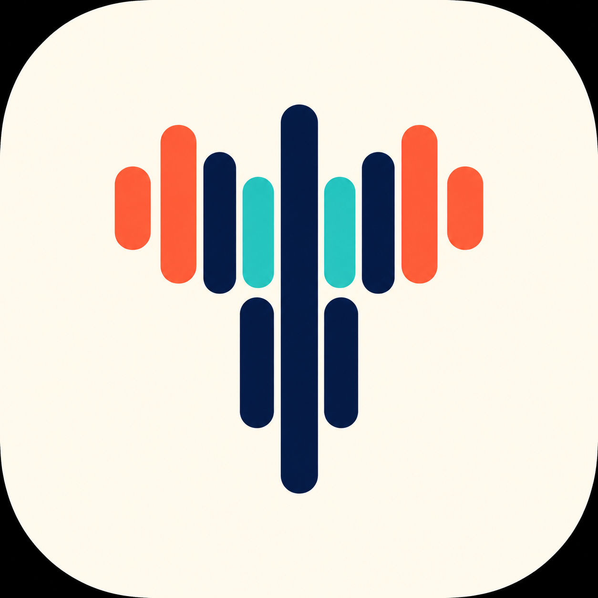
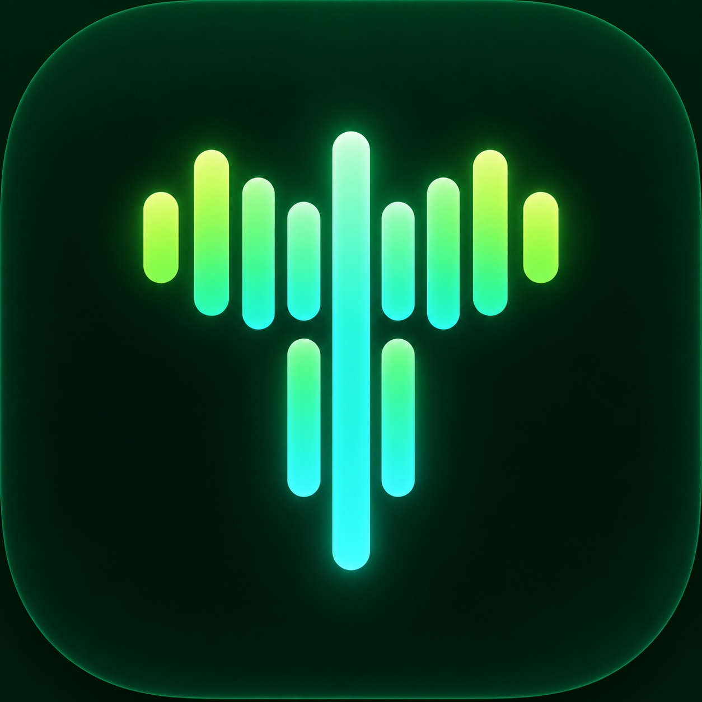
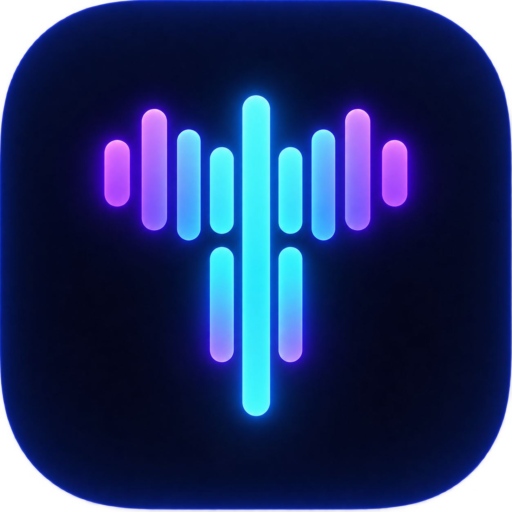

T
Tempo
визуальный ремастер · 1.0
Одна палитра, две разные компоновки для каждой страницы
Сравнить A / B
Только A
Только B
A · Витрина
просторная редакционная подача
B · Рабочее место
плотное управление и быстрые действия
Сохранённые варианты иконки
Шесть цветовых вариантов Pulse и Orbit

Pulse · Cream / Coral

Pulse · Forest / Lime

Pulse · Violet / Cyan
Orbit · Indigo / Cyan
Orbit · Ivory / Coral
Orbit · Plum / Lime